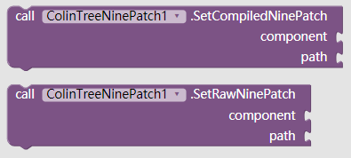
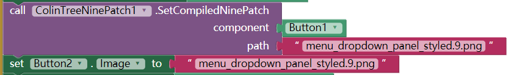
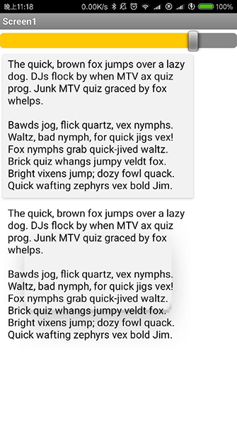

9-patch supporter - ColinTreeNinePatch
Some explaination are referenced from:9-Patches Explained - Wires Are Obsolete
In the past, when we are using Appinventor or Thunkable, we may meet a problem, that the picture will look ugly after zooming, because the size is no more match what we want
Actually in Android this may happen, but the engineers will not allow this happen for sure.
So that is why nine-patch was created.
One of Android’s most well-known points to consider in application development is the requirement to support a variety of different screen sizes and orientations in an application. The SDK is full of documentation and tools on how to help the developer best accomplish this goal.
The 9-Patch is a PNG image with some coding added that allows the Android system to determine how the image can be stretched and contorted to meet the specific layout constraints during use (like fill_parent and wrap_content). It does this by taking a predefined PNG image, and allowing the user to define a 1-pixel border around the image in locations where stretching can occur.
Now with NinePatchChunk liburary (the author Anatolii published on Github) and the extension by ColinTree, NinePatch is much more easier to be used on Appinventor and Thunkable.
Methods
- SetCompiledNinePatch
- SetRawNinePatch
- Parameters:
- component
e.g.
It is usually the last block of a component. - path
e.g.
sample.9.png - the asset "sample.9.png" that was uploaded
- component

Download
- Last update 2017.8.31
- Mirror1 (This website)
Sample
Now here is a compiled picture "menu_dropdown_panel_styled.9.png"
If it is set onto the Button1 by ColinTreeNinepatch, it works well with 9-patch rules
But if the it go through Button1.Image, it still looks horrible.


Making 9-patch
Here is a Online 9-patch generator
Personal recommand: to use the picture in the folder "res\drawable-xhdpi\" from the zip file that downloaded
9-patch compiler
For compiling, i copy the compiler "aapt.exe" from Android Studio, and wrote a batch file, that can help compiling 9-Patch on Windows
After download and unzip, all you need to do is drag the 9-Patches and drop them onto the batch file "ColinTree_9patch_compiler.bat"
when compiler finish its job, you can go to the "OUTPUT" folder and get your compiled 9-Patch images.
The compiled 9-Patch images crops the black line off, and write the chunk data into the file. It is not visible for us but it is for phones!
So DO NOT do anything else but copy or upload after the images are compiled.
- Last update 2017.8.31
- Mirror1 (This website)